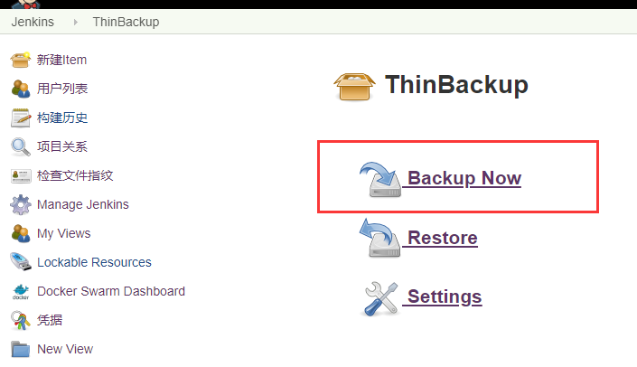

- 01.Jenkins的安装配置与日常维护.md.html
- 02.Jenkins强大的插件功能.md.html
- 03.Devops工具链.md.html
- 04.初探Jenkins CD实践.md.html
- 05.Jenkins常用项目配置参数.md.html
- 06.Jenkins部署之Docker要点.md.html
- 07.Jenkins集成之Ansible要点.md.html
- 08.Jenkins集成Ansible持续部署服务到Docker容器.md.html
- 09.实现自动化引擎之Jenkins Pipeline声明式语法.md.html
- 10.实现自动化引擎之Jenkins Pipeline脚本式语法.md.html
- 11.Pipeline语法进行持续交付与基础实践.md.html
- 12.Jenkins Docker Pipeline插件动态生成Slave节点语法剖析.md.html
- 13.使用 Docker Pipeline插件动态生成Jenkins Slave 实践.md.html
- 14.搞定不同环境下的Jenkins与Kubernetes集群连接配置.md.html
- 15.Jenkins Kubernetes Plugin介绍与语法详解.md.html
- 16.使用Kubernetes编排Jenkins Slave节点持续交付项目.md.html
- 17.使用Kubernetes插件持续部署服务到Kubernetes集群.md.html
- 18.Ansible Plugin插件语法详解与持续部署服务到kubernetes集群.md.html
- 捐赠
01.Jenkins的安装配置与日常维护
Jenkins 安装与系统管理
本章节作为<<使用Jenkins持续交付与部署>>系列文章的第一篇，主要介绍一下持续集成工具Jenkins的安装配置以及日常维护Jenkins的一些系统管理说明。本次持续交付/持续部署教程主要是针对Jenkins以及与之集成的一些开源工具进行扩展说明的，下面开始本章的内容介绍。
本小节课程主要涉及到的内容如下：
- 安装Jenkins
- Jenkins 系统管理与基础配置
介绍
在开始正式安装Jenkins之前，首先需要了解一下Jenkins是什么。
[Jenkins](https://jenkins.io/zh)是一款由Java编写的开源的可扩展持续集成工具。允许持续集成和持续交付项目，并通过各种扩展插件可以处理任何类型的集成构建或部署操作。
Jenkins 提供了软件开发的持续集成服务。当前持续集成(CI)已成为许多开发团队在整个软件生命周期内保证代码质量的必要流程。它是一种实践，旨在缓和和稳固软件的构建过程，而Jenkins使持续集成变成可能。它的主要目标是监控软件开发流程，快速定位并报告问题。丰富而众多的扩展插件，使得Jenkins能够帮助研发、运维、QA团队在软件测试（接口测试、单元测试等）、软件构建（maven、ant、gradle）、软件部署（shell、docker、ansible等等）等CI/CD整个环节进行良好的协作，提高工作效率。
安装
简单了解了jenkins是什么，接下来安装一下Jenkins。Jenkins的安装相对简单，可以通过war包、rpm包、Docker等方式安装，这里简单介绍两种安装方式，虽然安装方式不一样，但访问方法和配置都是一样的，所以凭个人喜好及实际情况选择安装方式。
使用rpm方式安装
使用rpm安装，首先要确保已经安装好jdk1.8+，使用最新版本时，如果jdk的版本低于1.8，对于jenkins的使用没有问题，但是在后续使用某个插件的时候可能会出现问题。
配置jdk
去 jdk官网 下载jdk1.8
$ tar xf jdk-8u231-linux-x64.tar.gz -C /usr/local/
# /etc/profile 添加如下内容
export JAVA_HOME=/usr/local/jdk1.8.0_231
export JRE_HOME=${JAVA_HOME}/jre
export CLASSPATH=.:${JAVA_HOME}/lib:${JRE_HOME}/lib
export PATH=${JAVA_HOME}/bin:$PATH
$ source /etc/profile
$ java -version
java version "1.8.0_231"
Java(TM) SE Runtime Environment (build 1.8.0_231-b11)
Java HotSpot(TM) 64-Bit Server VM (build 25.231-b11, mixed mode)
配置好jdk后，安装Jenkins。
#去官网下载最新的jenkins rpm包
$ wget https://pkg.jenkins.io/redhat-stable/jenkins-2.204.2-1.1.noarch.rpm
# 下载完成后安装
$ yum localinstall jenkins-2.204.2-1.1.noarch.rpm
# 启动
$ systemctl start jenkins
使用docker启动
$ docker run -u root -it -d --name jenkins -p 8080:8080 -p 50000:50000 -v jenkins-data:/var/jenkins_home jenkins/jenkins
获取镜像可以从docker hub搜索关键字获取。
第一次启动时会拉取镜像。
$ docker run -u root -it -d --name jenkins -p 8080:8080 -p 50000:50000 -v jenkins-data:/var/jenkins_home jenkins/jenkins
Unable to find image 'jenkins/jenkins:latest' locally
latest: Pulling from jenkins/jenkins
3192219afd04: Pull complete
17c160265e75: Pull complete
cc4fe40d0e61: Pull complete
9d647f502a07: Pull complete
d108b8c498aa: Pull complete
1bfe918b8aa5: Pull complete
dafa1a7c0751: Pull complete
78d3391dc013: Pull complete
c1c87cf7f0bf: Pull complete
4bfacf44cce2: Pull complete
9eaefa421a64: Pull complete
043144b011c9: Pull complete
3d9c8a4a5cb8: Pull complete
05fca0659bbd: Pull complete
14241c82960f: Pull complete
41a13492424a: Pull complete
d7aa64814e63: Pull complete
19049899ad6a: Pull complete
3b23f8338127: Pull complete
Digest: sha256:676448a326f96a991d2d32ffbe52f239c0d2c40de3538af2ae6f18d88bf3cb56
Status: Downloaded newer image for jenkins/jenkins:latest
11f86c1472fc4d89e1af5c9340f68e8318b6b7322d46abe30bff23f092a62fe5
# 查看启动的容器
$ docker ps
CONTAINER ID IMAGE COMMAND CREATED STATUS PORTS NAMES
11f86c1472fc jenkins/jenkins "/sbin/tini -- /usr/…" 6 minutes ago Up 6 minutes 0.0.0.0:8080->8080/tcp, 0.0.0.0:50000->50000/tcp jenkins
容器启动时映射了8080和50000端口，其中：
8080端口是web访问的端口。
50000端口是基于JNLP的Jenkins代理（slave）通过TCP与Jenkins master 进行通信的端口。
-v jenkins-data:/var/jenkins_home 为挂载的volume卷，将容器内的/var/jenkins_home目录挂载到jenkins-data卷；这个卷如果不存在，启动容器的时候会自动创建，也可以通过docker volume create jenkins-data命令手动创建或者映射到宿主机指定的目录。
容器启动成功后，通过访问IP:8080，如下Jenkins界面：
提示管理员秘密从/var/jenkins_home/secrets/initialAdminPassword路径获取(对于使用war包或者rpm包安装的Jenkins路径可能会有所差异)，如果使用rpm方式或者war包安装，直接在jenkins所在服务器上cat一下该文件即可，如果是docker方式安装，可根据上面获取的Container_ID或者Container_name执行docker命令：
$ docker exec -it jenkins cat /var/jenkins_home/secrets/initialAdminPassword
1dc17f65d83c4c56b13cbae230b5e7c6
获取到密码，密码输入成功后：

选择安装所需插件（如：gradle，maven，ant……），同样也可忽略这一步，后面有需要再安装所需插件，由于网络原因，安装时间可能有点长，需要耐心等待（或者参考下面的”修改插件更新源”）。然后设置好管理员用户名和密码登录即可，下面就是安装好后的jenkins界面。
到这里 jenkins 就安装完成。
Jenkins基础配置
系统管理
安装好Jenkins后，首先来看一下Jenkins中的系统管理（Manage Jenkins）面板。系统管理面板是整个Jenkins管理、配置、维护的入口。该面板下包含多个菜单项，默认包括如下：
Configure System（系统配置）：该菜单用来设置Jenkins的全局配置以及各种工具插件的全局配置，包括jenkins的工作目录、可同时构建的job的数量、jdk环境变量等等。
configure Global Security（全局工安全配置）：Jenkins的全局安全配置入口，可以配置用户权限、API Token、agent代理等信息。
Configure Credentials(凭据配置)：该菜单项用来创建各种类型的凭据，用于对系统或者服务进行认证，比如登录服务器，登录源码仓库的认证等。
Global Tool Configuration(全局工具配置)：该菜单项用来对Jenkins项目里使用到的全局工具进行配置，比如Jdk的配置，代码编译工具 maven/ant/gradle工具的配置，代码拉取命令git的配置等等。
Manage Plugins（插件管理）：Jenkins各种插件得入口，用来对插件进行增删更新等操作，jenkins强大的功能和扩展离不开各种插件的支持，所以在初期这是一个使用比价频繁的菜单。
System Information（系统信息）：该菜鸟用来显示Jenkins系统的各种属性信息，包括jenkins所在系统的配置信息，jenkins环境变量信息，jenkins所安装的插件信息等。
System Log（系统日志）：用来展示jenkins的系统日志。
Jenkins Cli（Jenkins命令行）：该菜单项介绍了如何使用jenkins-cli.jar在命令行操作jenkins，这个菜单提供了大量可以在命令行操作jenkins的命令以及使用说明，比如重启jenkins，可以使用如下方式。
java -jar jenkins-cli.jar -s ${jenkins_url} restart
Manage Nodes(管理节点)：该菜单项用于管理jenkins的节点信息，比如增加或减少jenkins slave节点，修改master或者slave节点的配置等，如何配置将在后面章节介绍。
Manage Users（用户管理）：该菜单项用于管理jenkins的系统用户信息，包括用户信息的增删改查等操作。
上面列出了jenkins的一些常用的配置菜单，在使用jenkins的时候，对于上面的菜单或多或少的都会接触到，并且在以后的学习中会对某个菜单里的使用进行详细的配置说明，这里先不多做介绍，当然如果你有些迫不及待了，也可以自己试一下。
配置文件
了解了Jenkins的面板配置，再来看一下jenkins的配置文件。Jenkins安装好以后，使用的默认端口为8080，通过ip加端口访问jenkins面板，点击”Manage Jenkins”–>”Configure System“，进入系统配置界面，可以看到jenkins的默认配置，比如下图所示：
通过该图可以看到jenkins的主目录为/var/lib/jenkins，该目录为Jenkins的实际工作目录，对于jenkins的配置修改以及存放jenkins项目配置的文件都会放到此目录下， 并不是运行Jenkins程序的目录。由上图发现该目录并不能在jenkins ui界面修改，对于要想修改Jenkins的工作目录路径的需求应该怎么实现呢，或者如果想要修改jenkins的启动端口，jvm内存等，又要如何修改呢？本小节就简单介绍一下如何修改这些配置。
对于使用Tomcat方式启动的Jenkins服务，直接修改tomcat的端口和jvm内存设置即可。有关工作目录的修改，大体就与使用rpm安装的jenkins服务相同了（建议保持默认即可）；对于使用容器镜像方式启动的jenkins服务如何配置，可参考docker hub仓库下jenkins镜像的Dockerfile 。
所以有关使用Tomcat方式或者容器化安装的Jenkins服务配置文件的说明这里不多说，主要介绍一下使用rpm方式安装的jenkins的配置文件的管理。
我这里使用rpm方式安装的jenkins服务，默认启动命令为systemctl start jenkins（以centos7为例），但是在系统默认存放启动文件的目录有没有找到与jenkins有关的service文件，该如何下手呢？通过systemctl status jenkins命令，可以获取jenkins启动的脚本文件，比如下面示例：
找到了该启动文件，首先看一下该文件的内容。
$ cat /etc/rc.d/init.d/jenkins |grep -v "^#\|^$"|grep "^JENKINS\|^PARAMS"
JENKINS_WAR="/usr/lib/jenkins/jenkins.war"
JENKINS_CONFIG=/etc/sysconfig/jenkins
JENKINS_PID_FILE="/var/run/jenkins.pid"
JENKINS_LOCKFILE="/var/lock/subsys/jenkins"
PARAMS="--logfile=/var/log/jenkins/jenkins.log --webroot=/var/cache/jenkins/war --daemon"
说明
- 我这里通过grep将所需要的内容过滤了出来，如果想要看全部内容，可以将过滤条件去掉。
然后通过ps命令查看一下Jenkins的进程信息。
$ ps -ef|grep jenkins
root 15655 1 2 Apr15 ? 00:31:11 /usr/local/jdk1.8.0_231/bin/java -Djava.awt.headless=true -DJENKINS_HOME=/var/lib/jenkins -jar /usr/lib/jenkins/jenkins.war --logfile=/var/log/jenkins/jenkins.log --webroot=/var/cache/jenkins/war --httpPort=8080 --debug=5 --handlerCountMax=100 --handlerCountMaxIdle=20
由上面信息可以看到，jenkins服务主要配置文件为/etc/sysconfig/jenkins，使用的 java为自定义的/usr/local/jdk1.8.0_231/bin/java，启动方式也是通过war包启动，日志文件存放在/var/log/jenkins/jenkins.log文件里，jenkins服务运行所需要的程序文件放到了/var/cache/jenkins/war目录。当然，这些配置的路径，都是可以修改的。
了解完基本配置信息，下面看一下jenkins的主配置文件。
$ cat /etc/sysconfig/jenkins|grep -v "^#\|^$"
JENKINS_HOME="/var/lib/jenkins"
JENKINS_JAVA_CMD=""
JENKINS_USER="root"
JENKINS_JAVA_OPTIONS="-Djava.awt.headless=true"
JENKINS_PORT="8080"
JENKINS_LISTEN_ADDRESS=""
JENKINS_HTTPS_PORT=""
JENKINS_HTTPS_KEYSTORE=""
JENKINS_HTTPS_KEYSTORE_PASSWORD=""
JENKINS_HTTPS_LISTEN_ADDRESS=""
JENKINS_HTTP2_PORT=""
JENKINS_HTTP2_LISTEN_ADDRESS=""
JENKINS_DEBUG_LEVEL="5"
JENKINS_ENABLE_ACCESS_LOG="no"
JENKINS_HANDLER_MAX="100"
JENKINS_HANDLER_IDLE="20"
JENKINS_EXTRA_LIB_FOLDER=""
JENKINS_ARGS=""
在这里，就可以看到jenkins的详细配置了，包括Jenkins的主要工作目录，Jenkins的端口，运行Jenkins的用户（默认为jenkins）以及jenkins启动时的java参数等。如果要修改jenkins的jvm参数，只需要将配置放到JENKINS_JAVA_OPTIONS参数里即可，多个参数使用空格隔开，修改完配置文件，不要忘了重启Jenkins服务。
Jenkins汉化
大部分版本的Jenkins安装好以后，默认的语言为英文，有些同学可能不太习惯英文版的jenkins，这时就需要对jenkins进行汉化，汉化比较简单，下面进行配置。
”Manage Jenkins”—> “Manage Plugins“在可选插件中找到Locale plugin插件，点击安装即可。安装完以后在”Config System“菜单中找到Locale选项配置，设置”Default Language“为zh_CN，并勾选Ignore browser preference and force this language to all users
如下图所示：
配置好后重启Jenkins，从新登录界面就发现英文菜单变成了中文菜单。
Jenkins针对不同的安装方式或者不同的版本汉化方法可能不一样，大多数版本使用上面的方法就能汉化成功。但是有的版本安装该插件后，重启jenkins后发现面板还是英文的，汉化不成功。那么接下来就需要在安装Localization: Chinese (Simplified）插件了，安装好后重启Jenkins即可。如果汉化完发现面板有一部分是中文一部分是英文的话，可能与jenkins的版本或者安装方式有关了。
修改插件更新源
Jenkins强大的功能和扩展离不开插件的支持。在安装jenkins时，或者安装完jenkins以后，需要安装很多必须的插件，使用官方默认的jenkins插件源安装插件时，要么速度很慢，要么安装失败，使得无论是工作效率还是学习效率都大大降低，为了解决此问题，需要修改一下jenkins下载插件的镜像源。
进入”Manage-Jenkins”–>”Manage Plugins” —> “高级“页面，网上大多数方法都是修改该页面下的”升级站点“下URL输入框的值，改为清华源或者Jenkins插件中心国内源。如下图所示：-
然而修改完成后，下载镜像还是很慢，这是因为Jenkins通过解析update-center.json 文件的方式来获取插件版本以及下载插件，但是jenkins使用私钥来给update-center.json文件做了签名，只有通过了公钥验证的update-center.json文件，才会被使用。所以还需要替换Jenkins中使用的秘钥和私钥文件。
替换证书文件
到https://github.com/jenkins-zh/mirror-adapter/rootCA下载mirror-adapter.crt文件，放到/var/cache/jenkins/war/WEB-INF/update-center-rootCAs目录下即可。
对于该配置流程，Jenkins中文社区帮大家把秘钥和地址的问题解决了，可以使用如下方式：
在jenkins面板的右下角，点击Jenkins中文社区，在跳转的界面会有”更新中心镜像设置“。如下所示：-
说明：
先点击使用，然后在点击”设置更新中心地址“，在跳转的页面输入上面给出的地址即可。
如果没有上面的Jenkins中文社区按钮，可能是你没有汉化导致的。
密码修改
在使用Jenkins的时候常常遇到了忘记Jenkins管理员登录密码的情况，如果忘记了密码怎么办？可以修改Jenkins的配置文件${JENKINS_HOME}/config.xml，找到：
<useSecurity>true</useSecurity>
将true 改为false，然后重启jenkins。
Jenkins重启后，访问Jenkins 就可以直接跳过验证，直接跳转到Jenkins面板界面了。然后点击”Manage Jenkins”–>”Config Global Security“，勾选“启用安全”，在”访问控制“选项的”安全域“属性，选中”Jenkins’ own user database“，授权策略属性选中”Logged-in users can do anything“。如下如所示：-
保存后，到”Manage Users“界面重置管理员用户密码即可。
备份与恢复
使用jenkins另一个必不可少的配置就是对jenkins的备份。Jenkins的所有的数据都是以文件的形式存放在${JENKINS_HOME}目录中。所以不管是迁移还是备份，只需要将${JENKINS_HOME}打包后在拷贝，然后将打包的文件解压到新的${JENKINS_HOME}目录就行了。备份jenkins的方法有很多种，本文就简单介绍一下常用的备份方法，使用ThinBackup插件。
在插件管理页面找到ThinBackup插件，安装即可（如果你不会安装，看一下第二篇的内容吧）。安装完以后，在manage jenkins界面会出现ThinBackup菜单项，点击进去后进入settings设置界面，进行备份设置。如下所示设置：
说明：
Backup directory：备份目录，用于存储备份的文件，如果指定的目录不存在，默认在进行备份之前会自动创建。
Backup schedule for full backups：进行备份的计划任务，与linux下的crontab一样，其中上面的H，代表哈希，为了允许定期调度的任务在系统上产生均匀负载，应尽可能使用符号H(用于“散列”)。例如，如果多个job都设置使用0 0 * * *将导致负载大幅飙升。相比之下，使用H H *仍然会每天执行一次每个job，但不会同时执行，更好地使用有限的资源。
Backup schedule for differential backups：进行差异化备份的计划任务，同上。
Max number of backup sets：备份的最大数量。
Files excluded from backup (regular expression)：不需要进行备份的文件的正则表达式。
Wait until Jenkins/Hudson is idle to perform a backup：等待jenkins空闲多长时间后进行备份。
Backup build results：如果启用此选项，还将备份构建结果，一般不建议勾选此选项。
Backup ‘userContent’ folder：备份${jenkins_home}/userContent目录下的文件。
Backup next build number file：备份jenkins构建的build id文件。
Backup plugins archives：备份插件。
Clean up differential backups：完成备份以后清除所有的差异备份。
Move old backups to ZIP files：如果选中此选项，则无论何时执行新的完整备份，所有旧备份集都将移至ZIP文件。每个ZIP文件将包含一个备份集，即一个完整备份和任何引用该备份文件的差异备份。文件名将标识包含备份的时间范围（即完整备份的时间戳和最新差异备份的时间戳）。
备份策略根据自己实际情况定义即可。
保存后回到ThinBackup界面，除了可以自动进行备份外，也可以通过手动备份，点击Backup Now按钮就会立即进行备份。如下按钮：

备份完后会在上面设定的备份目录下生成一个以FULL-开头，以当前时间（精确到分）为结尾的目录，该目录下就是默认所有的Jenkins配置。
当要使用备份文件进行恢复的时候，点击restore按钮，在跳转的界面中就会显示出该备份文件的备份时间，点击Restore即可。
总体来说，使用该插件备份相对简单，这里就不在多说，有兴趣的可以自己试一下。
© 2019 - 2023 Liangliang Lee. Powered by gin and hexo-theme-book.